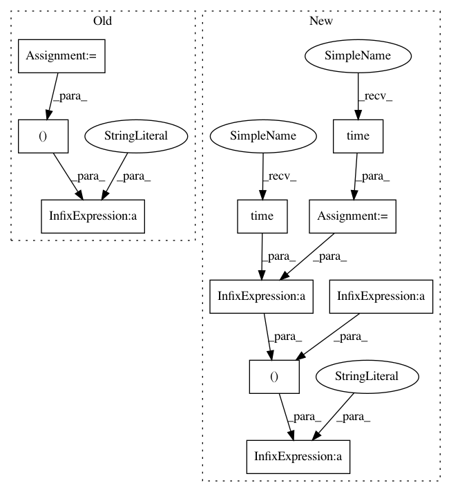

22b2bd0604d103404c6299fa5792f1cf614dae9b,apps/rss_feeds/tasks.py,TaskFeeds,run,#TaskFeeds#,13
Before Change
active=True,
active_premium_subscribers__gte=1
).order_by("?")[:500]
popular_count = popular_feeds.count()
// Regular feeds
feeds = Feed.objects.filter(
next_scheduled_update__lte=now,
active=True,
active_subscribers__gte=1
).order_by("?")[:600]
active_count = feeds.count()
// Force refresh feeds
refresh_feeds = Feed.objects.filter(
next_scheduled_update__lte=now,
active=True,
fetched_once=False,
active_subscribers__gte=1
).order_by("?")[:50]
refresh_count = refresh_feeds.count()
// Mistakenly inactive feeds
day = now - datetime.timedelta(days=1)
inactive_feeds = Feed.objects.filter(
last_update__lte=day,
queued_date__lte=day,
min_to_decay__lte=60*24,
active_subscribers__gte=1
).order_by("?")[:100]
inactive_count = inactive_feeds.count()
week = now - datetime.timedelta(days=7)
old_feeds = Feed.objects.filter(
last_update__lte=week,
queued_date__lte=day,
active_subscribers__gte=1
).order_by("?")[:500]
old_count = old_feeds.count()
logging.debug(" ---> ~FBTasking ~SB~FC%s~SN~FB/~FC%s~FB/~FC%s~FB/~FC%s~FB/~FC%s~SN~FB feeds..." % (
popular_count,
active_count,
refresh_count,
inactive_count,
old_count,
))
Feed.task_feeds(popular_feeds, verbose=False)
Feed.task_feeds(feeds, verbose=False)
After Change
active_subscribers__gte=1
).order_by("?")[:1000]
active_count = feeds.count()
cp1 = time.time()
// Force refresh feeds
refresh_feeds = Feed.objects.filter(
next_scheduled_update__lte=now,
active=True,
fetched_once=False,
active_subscribers__gte=1
).order_by("?")[:100]
refresh_count = refresh_feeds.count()
cp2 = time.time()
// Mistakenly inactive feeds
day = now - datetime.timedelta(days=1)
inactive_feeds = Feed.objects.filter(
last_update__lte=day,
queued_date__lte=day,
min_to_decay__lte=60*24,
active_subscribers__gte=1
).order_by("?")[:100]
inactive_count = inactive_feeds.count()
cp3 = time.time()
week = now - datetime.timedelta(days=7)
old_feeds = Feed.objects.filter(
last_update__lte=week,
queued_date__lte=day,
active_subscribers__gte=1
).order_by("?")[:500]
old_count = old_feeds.count()
cp4 = time.time()
logging.debug(" ---> ~FBTasking ~SB~FC%s~SN~FB/~FC%s~FB (~FC%s~FB/~FC%s~SN~FB) feeds... (%.4s/%.4s/%.4s/%.4s)" % (
active_count,
refresh_count,
inactive_count,
old_count,
cp1 - start,
cp2 - cp1,
cp3 - cp2,
cp4 - cp3
))
Feed.task_feeds(feeds, verbose=False)
Feed.task_feeds(refresh_feeds, verbose=False)
In pattern: SUPERPATTERN
Frequency: 3
Non-data size: 10
Instances
Project Name: samuelclay/NewsBlur
Commit Name: 22b2bd0604d103404c6299fa5792f1cf614dae9b
Time: 2013-03-29
Author: samuel@ofbrooklyn.com
File Name: apps/rss_feeds/tasks.py
Class Name: TaskFeeds
Method Name: run
Project Name: brian-team/brian2
Commit Name: a7418e4f236b5c9089ef7e0c81943bd86f771dfe
Time: 2016-01-28
Author: marcel.stimberg@inserm.fr
File Name: brian2/stateupdaters/base.py
Class Name: StateUpdateMethod
Method Name: apply_stateupdater
Project Name: samuelclay/NewsBlur
Commit Name: 22b2bd0604d103404c6299fa5792f1cf614dae9b
Time: 2013-03-29
Author: samuel@ofbrooklyn.com
File Name: apps/rss_feeds/tasks.py
Class Name: TaskFeeds
Method Name: run
Project Name: dmlc/gluon-nlp
Commit Name: 2bf8adc6913f17dfe8324b1b1a63df4d2b92b9a1
Time: 2018-08-13
Author: linhaibin.eric@gmail.com
File Name: scripts/language_model/large_word_language_model.py
Class Name:
Method Name: test